Copertine · the-birthday-massacre-italia
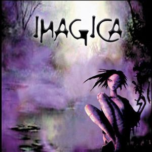
2000 - Imagica (Demo 1) · 2000
2001 - Imagica (Demo 2) · 2001
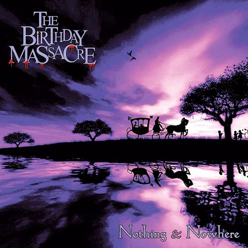
2002 - Nothing & Nowhere · 2002
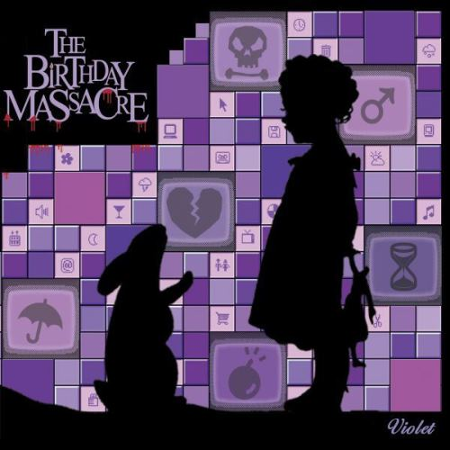
2004 - Violet (2005 Reissue) · 2004
2007 - Walking With Strangers · 2007
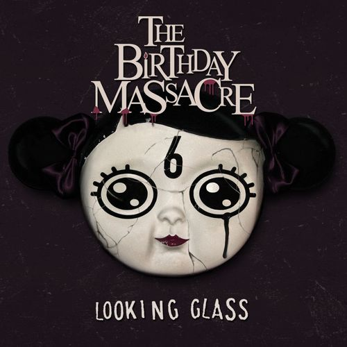
2008 - Looking Glass · 2008
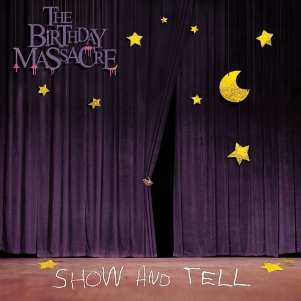
2009 - Show And Tell · 2009
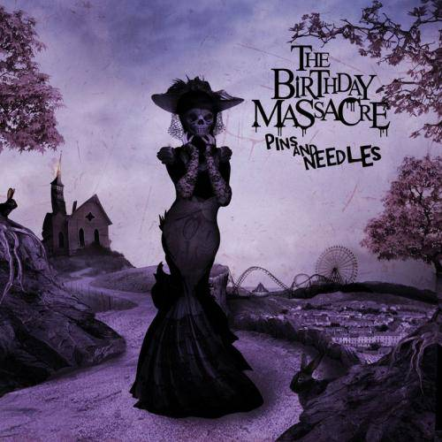
2010 - Pins And Needles · 2010
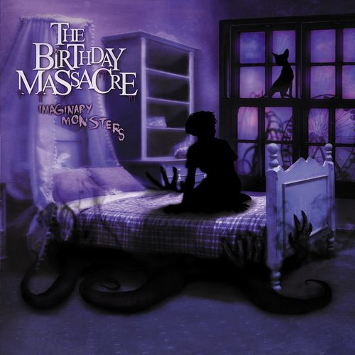
2011 - Imaginary Monsters · 2011
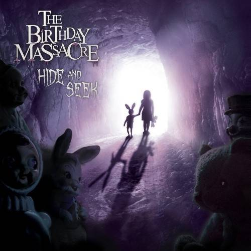
2012 - Hide And Seek · 2012
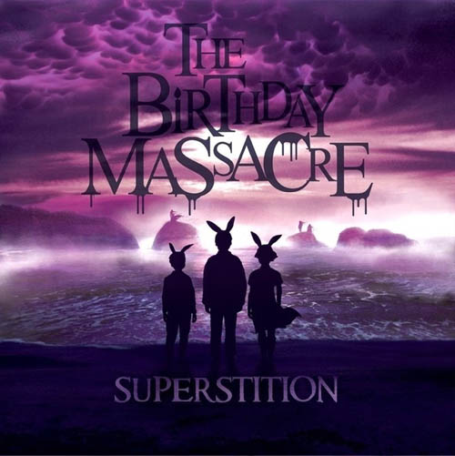
2014 - Superstition · 2014
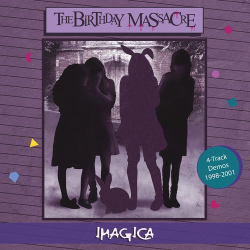
2016 - Imagica · 2016
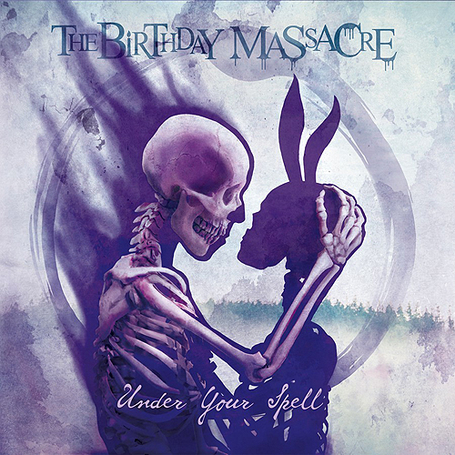
2017 - Under Your Spell · 2017
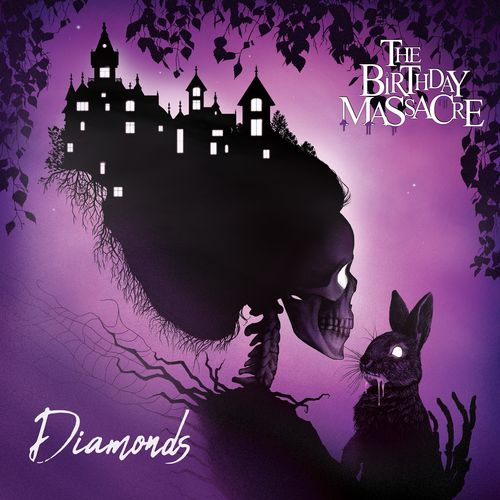
2020 - Diamonds · 2020
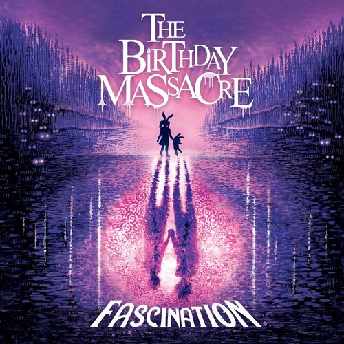
2022 - Fascination · 2022
The Birthday Massacre - 2022 - Fascination · 2022
2025 - Pathways · 2025
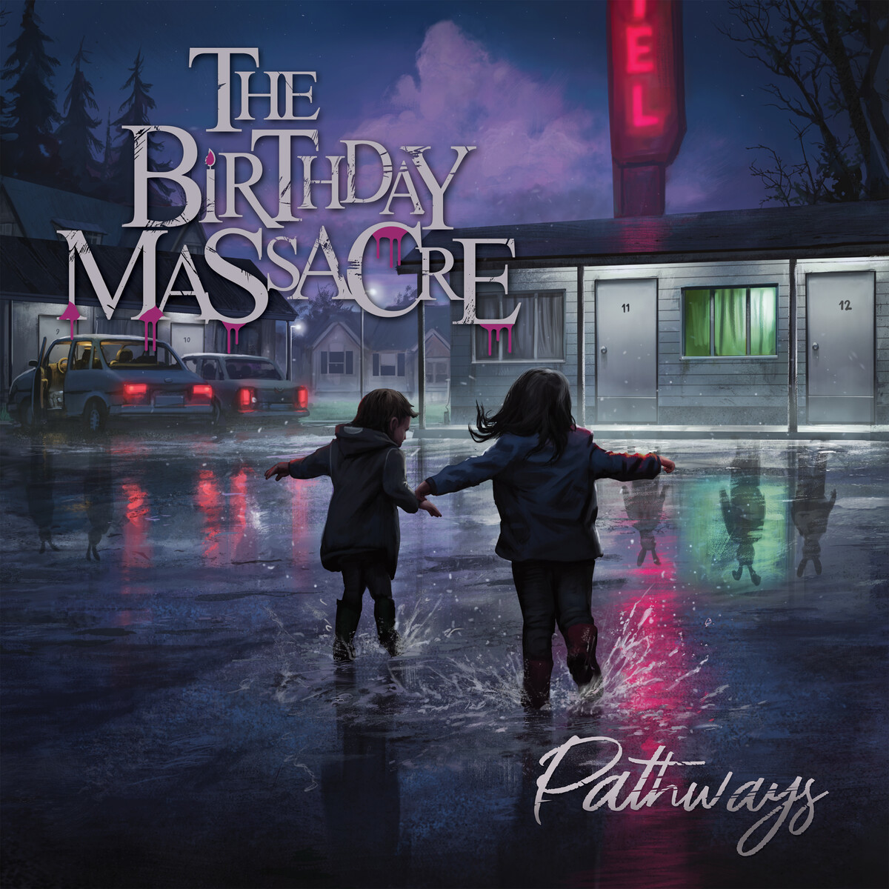
The Birthday Massacre - Pathways (2025) (16bit-44.1kHz) · 2025
band.jpg ·